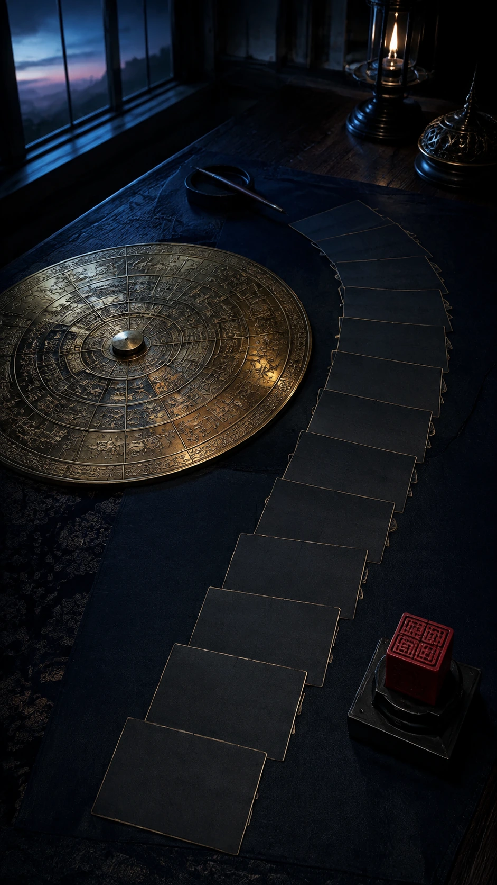
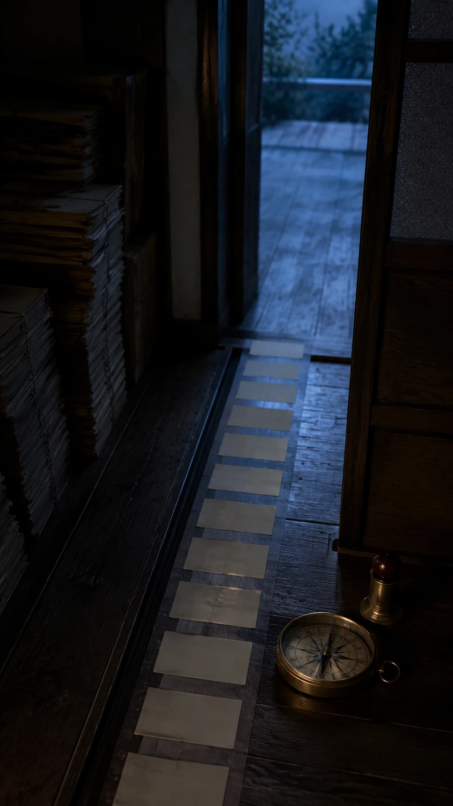
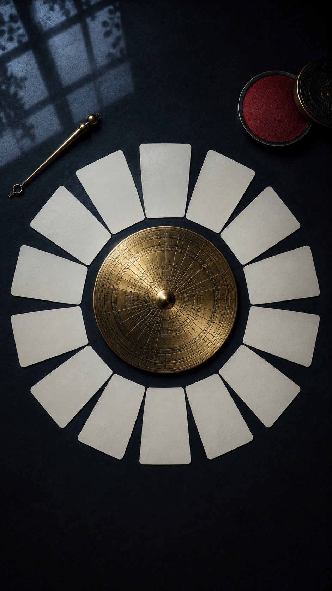
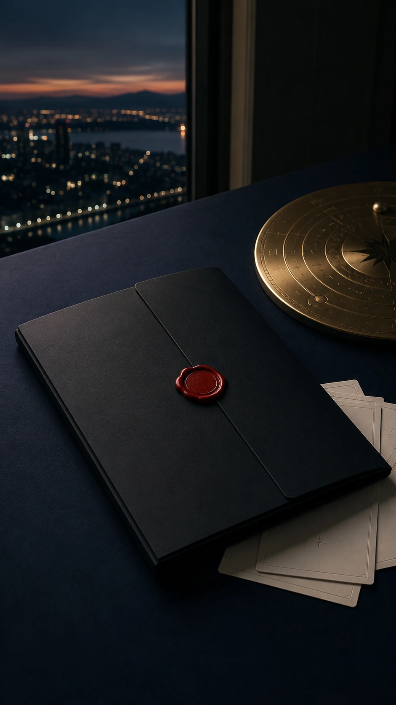
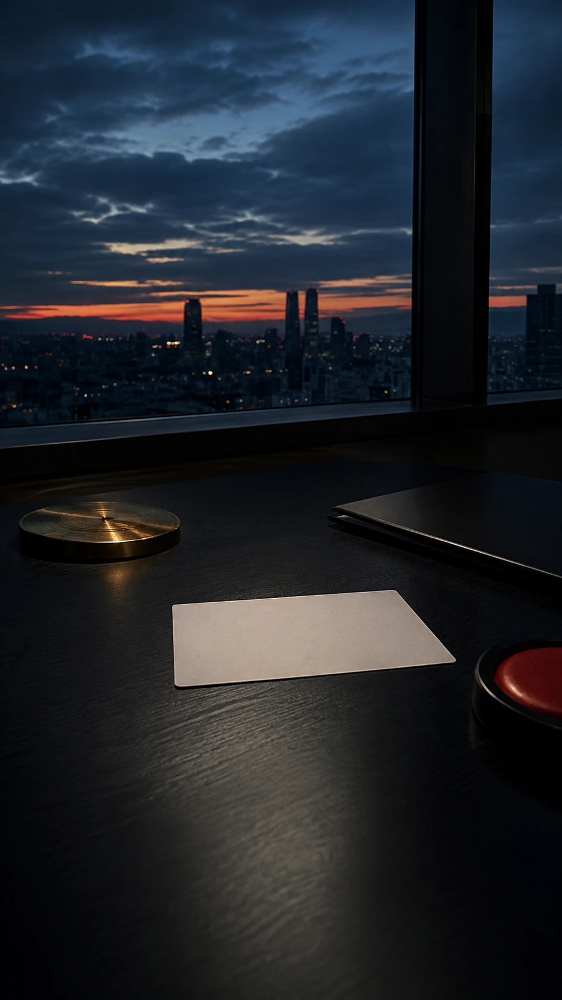

2027년, 한마디로 어떤 해야?
올해 한 해 결과 작년과 달라지는 지점을 봅니다.

같은 해도 사람마다 밀 해가 있고, 다질 해가 있습니다. 내 한 해의 결을 먼저 봅니다.

신년 흐름은 입춘 전환을 기준으로 봅니다. 달력의 시작과 체감되는 시작은 다를 수 있습니다.

반복된 흐름은 자책보다 구조를 먼저 봐야 합니다. 올해는 어디서 힘을 쓰는지 나눠 봅니다.

일, 돈, 사람의 속도가 같지 않습니다. 한 해를 한 단어로 줄이되 과장하지 않습니다.

한 해 결, 일과 돈의 움직임, 관계의 들어오고 나감, 대운 전환 여부를 분리합니다.

달마다 잘 풀리는 결, 쉬어갈 결, 일을 벌이기 좋은 결을 서로 다른 문장으로 봅니다.

기회가 들어오는 구간, 새는 구멍, 정리되는 관계를 같은 말투로 뭉개지 않고 나눕니다.

첫 3개월은 새해 감정이 아니라 시동을 거는 순서로 정리합니다.
올해 한 해 결과 작년과 달라지는 지점을 봅니다.
입춘 전환과 시동 거는 시기를 분리합니다.
열두 달 컨디션과 쉬어갈 달을 따로 봅니다.
대운 전환이 체감되는 구간인지 확인합니다.

기원을 권하지 않습니다. 지난해를 접고 올해 목표를 잡는 방식만 현실적으로 남깁니다.

계정에 저장된 사주로 2027년의 한 해 흐름을 확인합니다.

특정 사건을 단정하지 않고, 한 해를 준비하는 기준으로 읽습니다.